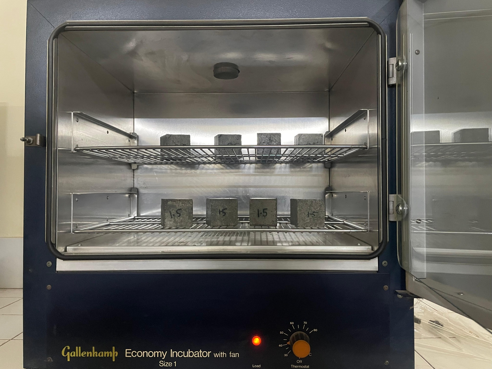
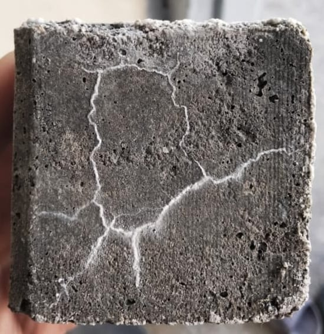

Civil Engineering Graduate · UET Peshawar
Shayan Ahmed Azad
Civil Engineering Graduate | BIM | Quantity Surveying | Project PlanningCivil Engineering graduate with practical and academic experience in quantity surveying, cost estimation, BIM, technical drafting, project scheduling, and sustainable construction research.
Engineering Skills
Technical capabilities and selected work
Dedicated pages present drawings, models, schedules, worksheets, and research outputs in their proper project context.
Estimation
Quantity Surveying & Cost Estimation
Quantity takeoff, BOQ preparation, material analysis, cost-estimation workflow, and Excel-based documentation.
Open skill page ↗Digital Delivery
BIM & Revit
Residential BIM studies, exterior and interior models, dimensioned plans, and coordinated model outputs.
Open skill page ↗Technical Drawing
AutoCAD
As-built plans, elevations, measured layouts, room labels, dimensions, and public-building drawing sheets.
Open skill page ↗Planning
Project Planning & Primavera P6
WBS development, activity sequencing, logic relationships, Gantt schedules, CPM, baselines, and updating.
Open skill page ↗Analysis Tools
Civil Engineering Software & Analysis
Engineering work using Excel, ImageJ, SAP2000, QGIS, Revit, and Primavera P6 across analysis, mapping, BIM, planning, and documentation.
Open skill page ↗Training
Certificates
Professional training in estimating, Excel, Revit, and AutoCAD, organized in a dedicated review page.
Review certificatesFinal Year Design Project · EverCrete
Sustainable Self-Healing Cementitious Material
A laboratory-scale study of Bacillus subtilis mortar, calcium lactate dosage, temperature-dependent crack healing, compressive-strength recovery, ImageJ measurement, and preliminary XGBoost prediction.
View complete case study ↗

Profile
Engineering principles supported by digital tools and practical work
My interests connect quantity surveying, BIM, planning, technical documentation, design, engineering analysis, and sustainable construction.
I completed a B.Sc. in Civil Engineering at the University of Engineering and Technology, Peshawar (2022–2026), and gained internship exposure on the Chitral–Booni–Mastuj–Shandur Road Project with NESPAK.
Open to graduate, trainee, internship, and early-career Civil Engineering opportunities.
View the CV for full education, technical skills, certification, and contact details.